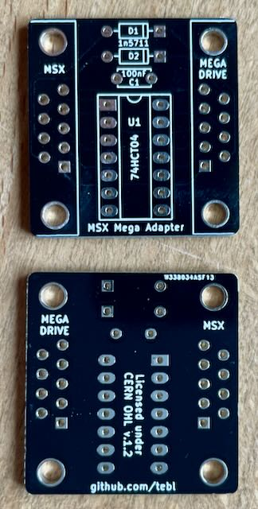

Mit diesem Adapter kann ein Sega Megadrive Controller an einem MSX Computer verwendet werden.
Projekt-Homepage • Interakiver Bestückungsplan

| Komponente | Anzahl | Preis | Anbieter |
| Platine | 1 | €1.00 | |
| 100nF Kondensator | 1 | €0.03 | Reichelt |
| 1N5711 Diode | 2 | €0.10 | Reichelt |
| 74HCT01 | 1 | — | |
| 14-Pol Sockel, schmal | 1 | €0.25 | Reichelt |
| 90° D-Sub-9 Stecker | 1 | €0.36 | Reichelt |
| 90° D-Sub-9 Buchse | 1 | €0.35 | Reichelt |
| nur Platine | €1.00 | ||
| Teilbausatz | €2.09 |